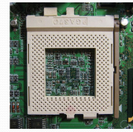
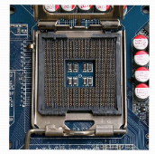
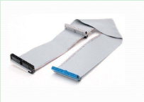
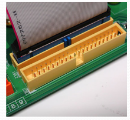
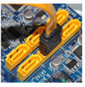
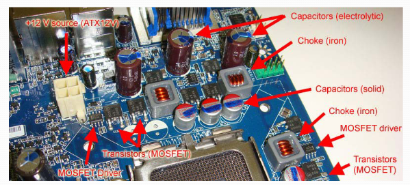
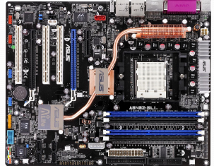

Preguntas de la parte de teoría.
Ancho de banda de hasta 60 MBps, Half-duplex, intensidad de recarga de dispositivos de 500 mA.
Ancho de banda de hasta 500 MBps, Full-duplex, intensidad de recarga de dispositivos de 900 mA.
Ancho de banda de hasta 1200 MBps (2400 MBps para USB 3.2), Full-duplex, intensidad de recarga de dispositivos de 1500 mA.
Ancho de banda de hasta 2400 MBps, Half-duplex, intensidad de recarga de dispositivos de 1500 mA.
Un bit cambia de valor debido a ruido electromagnético.
El sistema operativo se cuelga por un error de programación.
Un componente se estropea y necesita ser reemplazado.
El sistema responde más lento de lo habitual.
En el disco duro del sistema o en la memoria ROM del sistema.
En la memoria principal del sistema operativo.
En una memoria RAM alimentada por una pila o en una memoria flash.
En un dispositivo externo conectado por USB.
Mediante aplicaciones del sistema operativo y otras operaciones.
A través de un programa especial que se ejecuta antes de arrancar el sistema operativo.
Por medio de comandos en el terminal.
Utilizando un dispositivo externo.
Menor latencia y menor capacidad.
No incluyen ECC.
Permiten módulos de mayor tamaño gracias a un buffer que almacena señales de control y datos, aunque tienen mayor latencia.
Solo se usan en PC de sobremesa.

PGA
LGA
FGA
HGA
No todas las interfaces serie con reloj embebido son full duplex.
Todas las interfaces serie con reloj embebido son full duplex.
USB 2.0 es un ejemplo de interfaz full duplex con reloj embebido.
USB 2.0 no es full duplex.
Hasta 128 GB.
Hasta 1 TB.
Decenas de TB por cinta.
Centenas de TB por cinta.
Hasta 576 Mbps.
La cantidad de datos transmitidos por segundo.
El tiempo que transcurre desde que se solicita una tarea hasta que finaliza.
El número de usuarios conectados simultáneamente.
El tamaño de la memoria RAM utilizada.
Un microprocesador puede acceder simultáneamente a dos módulos del mismo banco de memoria ya que usan el mismo canal de memoria para comunicarse con él.
Un microprocesador no puede acceder simultáneamente a dos módulos del distinto banco de memoria ya que usan el mismo canal de memoria para comunicarse con él.
Un microprocesador no puede acceder simultáneamente a dos módulos del mismo banco de memoria ya que usan el mismo canal de memoria para comunicarse con él.
Un microprocesador puede acceder simultáneamente a dos módulos del distinto banco de memoria ya que usan el mismo canal de memoria para comunicarse con él.
USB 2.O es Full-Duplex.
USB 3.O es Full-Duplex.
USB 2.O es Half-Duplex.
USB 3.O es Half-Duplex.
Almacenamiento de respaldo (backup) y archivado.
Almacenamiento de datos en dispositivos móviles.
Almacenamiento de datos en sistemas operativos volátiles.
Almacenamiento de datos en discos ópticos.
150 MB/s.
300 MB/s.
600 MB/s.
450 MB/s.
Permite la instalación automática de controladores.
Facilita la detección y configuración de hardware.
Requiere configuración manual del usuario.
Solo funciona en sistemas operativos antiguos.
32 colas con 32k peticiones cada una.
64 colas con 64k peticiones cada una.
128 colas con 128k peticiones cada una.
16 colas con 16k peticiones cada una.
Mejorar el hardware de un solo servidor, o intentar el de varios.
Añadir más servidores para repartir la carga.
Reducir el número de procesos en ejecución.
Utilizar solo arquitecturas monolíticas.
Peripheral Component Interconnect
Personal Computer Interface
Processor Communication Interface
Peripheral Communication Interconnect
Un disco duro deja de funcionar y debe ser reemplazado.
Un bit cambia de valor por alta temperatura.
El servidor da una respuesta equivocada por un error de programación.
El sistema pierde la conexión de red por un corte eléctrico.
Solo dispone de un puerto Ethernet en la parte superior.
Tiene 3 puertos Ethernet apilados verticalmente.
No incluye ningún conector RJ-45 visible.
Se pueden ver claramente 2 puertos Ethernet juntos.
Un tipo de memoria virtual.
Un componente cuya capacidad limita el rendimiento global.
Un fallo de caché u otro tipo de fallo similar visto en teoría.
Un proceso de optimización.
Paralela.
Serie, con reloj embebido en los datos.
Óptica, sin reloj embebido en los datos.
Serie, sin reloj embebido en los datos.
Magnética.
Almacenar datos temporales para el sistema operativo.
Ejecutar aplicaciones de usuario directamente.
Almacenar el programa de arranque del computador.
Almacenar archivos multimedia.
PCIe x4.
PCIe x2.
SATA III.
SAS.
Accelerated Graphics Port
Advanced Graphics Processor
Automatic Graphics Protocol
Advanced Gateway Port
La capacidad de un sistema para ser actualizado fácilmente.
La probabilidad de que el sistema funcione correctamente durante un intervalo de tiempo determinado.
El rendimiento máximo alcanzable por el sistema.
La facilidad de uso del sistema por parte de los usuarios.
El desfase entre las señales debido a que no todas las pistas recorren la misma distancia.
La sincronización perfecta entre todas las señales, evitando el desfase respecto de las señales.
La pérdida de datos por interferencias electromagnéticas.
La reducción de la velocidad de transmisión por errores de hardware.
P-ATA, SATA, SCSI.
PCIe, M.2, USB.
SAS, SATAe, U.2.
RAM, ROM, NVRAM.
En 2004, los Opteron fueron los primeros procesadores x86 con 6 núcleos.
Cada CCD tiene hasta 8 cores Zen x86-64 más memorias caché.
Cada CCD tiene hasta 12 cores Zen x86-64 más memorias caché.
Cada CCD tiene hasta 6 cores Zen x86-64 más memorias caché.
CCD es Core Chiplet Die.
CCD es Core Chipet Die.
CCD es Core Chiple Die.
A través de cabezales magnéticos controlados por un brazo motor y el giro de los discos.
Mediante pulsos eléctricos sin partes móviles.
Por medio de tecnología óptica, similar a la utilizada en los CD, donde un haz láser lee y escribe información en la superficie del disco mediante cambios en la reflectividad.
Utilizando memoria flash, que almacena los datos en celdas electrónicas no volátiles, permitiendo la conservación de la información incluso cuando el dispositivo está apagado y ofreciendo tiempos de acceso muy reducidos.
10b/8b con una eficiencia del 90%.
8b/10b con una eficiencia del 80%.
8b/8b con una eficiencia del 100%.
10b/10b con una eficiencia del 70%.
Conserva la información incluso cuando deja de recibir alimentación.
Pierde la información al apagar el dispositivo en todo caso, aunque se puede recuperar.
Solo funciona en dispositivos móviles.
Es más rápido que la memoria RAM.
Full-duplex.
Half-duplex.
Comunicación asíncrona.
Comunicación inalámbrica.
SATA.
PCIe.
SCSI.
Mean Time Before Failure.
Mean Time Between Failures.
Maximum Time Before Failure.
Minimum Time Between Faults.
Las líneas se comparten entre todos los dispositivos PCI.
Las líneas no se comparten entre todos los dispositivos PCI.
Half Duplex.
Full Duplex.
Plug and play.
Distribuir la dirección física de las celdas de memoria para evitar su desgaste tras múltiples re-escrituras (wear levelling).
Distribuir la dirección lógica de las celdas de memoria para evitar su desgaste tras múltiples re-escrituras (wear levelling).
Aumentar la velocidad de lectura y escritura mediante discos magnéticos.
Reducir el consumo energético de la unidad.
Sincronizar el acceso a las celdas de memoria con el procesador.
Para todos los procesadores existentes, sin importar el fabricante.
Para una familia concreta de procesadores compatibles con la placa.
Para modelos diseñados con arquitectura híbrida y personalizada.
Para equipos que necesitan múltiples sistemas de procesamiento.
Permiten hasta 6 conectores SAS o SATA usando un 1-to-6 splitter cable.
Permiten hasta 4 conectores SAS o SATA usando un 1-to-4 splitter cable.
Permiten hasta 8 conectores SAS o SATA usando un 1-to-8 splitter cable.
Solo permiten conectar discos ópticos mediante adaptadores especiales.
Almacenan información de forma permanente (no volátil).
Utilizan discos ópticos para almacenar información.
Solo funcionan en dispositivos móviles.
Almacenan información de forma volátil.
En una cinta recubierta de material magnético que se enrolla por medio de carretes almacenan información.
Procesadores de texto.
Bases de datos centralizadas.
Intercambio y búsqueda de ficheros como BitTorrent o eMule.
Navegadores web.
Small Computer System Interface.
Serial Computer System Interface.
Simple Computer System Integration.
Small Communication System Interface.
Bus pararelo de 32 bits.
Bus pararelo de 64 bits.
Sincronizados por una misma señal de reloj.
Sincronizados por una distinta señal de reloj.
Half-Duplex
Full-Duplex.
Universal Serial Bus.
Universal System Bus.
Unified Serial Bus.
Universal Storage Bus.
Proveer energía al procesador.
Almacenar datos del sistema operativo.
Alimentar la memoria RAM para el reloj en tiempo real.
Ejecutar el programa de arranque.
Interconectar la tarjeta gráfica con el sistema de refrigeración.
Proteger al sistema frente a sobrecargas de los periféricos.
Encargarse del suministro eléctrico a todos los buses de datos.
Gestionar las conexiones lentas entre el sur y otros dispositivos.
4.7 GB.
8.5 GB.
25-128 GB.
0.64-0.7 GB.
Sustituir todos los componentes hardware.
Configurar hardware, parámetros del sistema operativo y optimizar programas.
Instalar más aplicaciones, cuantas más es mejor, según se ha visto en clase.
Desactivar la memoria virtual.
320 MBps.
600 MBps.
1500 MBps.
2400 MBps.
Hot plug, permitiendo conectar y desconectar dispositivos sin necesidad de apagar el sistema.
Solo permite conexiones paralelas.
No permite recarga de dispositivos.
Solo funciona con discos ópticos.
Óptico, mediante el uso de un haz láser que lee y escribe datos en la superficie de discos ópticos como CD, DVD o Blu-ray, aprovechando cambios en la reflectividad del material para almacenar la información.
Paralelo, con un bus de datos de 16 bits sincronizado por una misma señal de reloj.
Serie, con un bus de datos de 8 bits.
Magnético, utilizando discos recubiertos de material magnético donde los datos se almacenan mediante la orientación de partículas magnéticas, como ocurre en los discos duros (HDD) y cintas magnéticas.
En pistas (tracks), subdivididas en sectores de 512 bytes, agrupados en clusters lógicos.
En bloques de memoria aleatoria distribuidos a lo largo de la superficie del disco, sin seguir un orden específico, lo que puede dificultar el acceso secuencial a los datos y aumentar la fragmentación.
En celdas de memoria flash organizadas en páginas y bloques, permitiendo un acceso rápido y eficiente, pero con limitaciones en el número de escrituras por celda y una gestión especial para el borrado y la reescritura de datos.
En sectores ópticos.
Ancho de banda de hasta 1200 MBps, Full-duplex, intensidad de recarga de dispositivos de 1500 mA.
Ancho de banda de hasta 2400 MBps, Full-duplex, intensidad de recarga de dispositivos de 1500 mA.
Menor latencia y sin ECC.
Incluyen un registro para señales de control, mayor latencia, permiten módulos de mayor tamaño y tienen ECC.
Solo se usan en portátiles.
No permiten ECC.
Escalabilidad, permitiendo conectar más discos SAS sin requerir más puertos físicos en el controlador.
Reducción de la capacidad total del sistema.
Limitación del número de discos conectados a uno por puerto.
Solo permiten la conexión de discos SATA.
10 metros.
12 metros.
15 metros.
8 metros.
Gran capacidad de procesamiento y almacenamiento masivo.
Restricciones de tamaño, tiempo de respuesta, consumo y coste.
Funcionamiento exclusivo en ordenadores de sobremesa.
Ausencia de interfaces de comunicación.
Menor escalabilidad.
Menor complejidad de programación.
Permite distribuir la carga entre varios servidores.
Reduce la carga en la red.
Almacenan información de forma volátil, es decir, pierden todos los datos almacenados cuando se interrumpe la alimentación eléctrica o se apaga el dispositivo.
Almacenan información de forma permanente (no volátil) a través de surcos en un disco que pueden ser leídos por un haz de luz láser.
Utilizan discos magnéticos para almacenar información.
La capacidad de reducir recursos ante una disminución de la carga o bien la facilidad para conseguirlos.
La facilidad para aumentar recursos o características ante un aumento significativo de la carga.
La capacidad de mantener el mismo rendimiento sin importar la carga.
La facilidad de actualizar el sistema operativo.
Full-duplex, con transmisión simultánea en ambos sentidos.
Half-duplex, con transmisión alternada en ambos sentidos.
Comunicación inalámbrica, sin necesidad de cables.
Comunicación asíncrona, sin sincronización de reloj.
5400, 7200, 10000, 15000 r.p.m.
3200, 4800, 10000, 15000 r.p.m.
2000, 4000, 6000, 8000 r.p.m.
1000, 2000, 3000, 4000 r.p.m.
La placa cuenta con 4 ranuras de RAM colocadas en paralelo.
Tiene 8 ranuras RAM organizadas en dos grupos de cuatro.
Dispone de 6 ranuras DIMM junto a un solo socket.
Solo hay 2 ranuras de RAM para sistemas compactos.
RAM
Disipador de calor
Pila
ROM
Regulador de voltaje
Realizar todas las tareas de procesamiento.
Actuar como cliente adicional.
Capturar las peticiones y sincronizar el sistema.
Almacenar únicamente los datos.
Conectores para dispositivos externos.
Elementos que permiten seleccionar algunos parámetros de configuración directamente en la placa.
Chips de memoria para almacenar datos, solamente aquellos datos que puede reconocer o intentar procesar.
Componentes para aumentar la velocidad del procesador.
Se observan 2 disipadores grandes de aluminio negro.
Solo hay un disipador central sin aletas visibles.
Hay 4 disipadores pequeños distribuidos por la placa.
No hay disipadores visibles en esta placa.
Un sistema informático diseñado para realizar múltiples tareas generales.
Un sistema informático acoplado a otro dispositivo, diseñado para funciones dedicadas.
Un sistema informático sin restricciones de tamaño ni consumo.
Un sistema informático utilizado solo en servidores.
Portátiles.
PC de sobremesa.
Servidores que requieren módulos de gran capacidad.
Dispositivos móviles.
Un componente que nunca se utiliza durante la ejecución de un programa, de ahí el nombre.
Una parte del sistema o código donde se concentra la mayor carga de trabajo o uso de recursos.
Un tipo de memoria de acceso aleatorio.
Un error crítico en el sistema operativo.
Componentes hardware, sistema operativo y aplicaciones.
Solo el tipo de aplicaciones instaladas.
Únicamente la configuración de la memoria virtual.
Ninguno de los anteriores.
CD (Compact Disc).
DVD (Digital Versatile Disc).
HDD (Hard Disk Drive).
Blu-ray (BD).
Magnéticos: HDD (Hard Disk Drives), cintas.
Ópticos: CD, DVD, Blu-Ray (BD).
NVRAM: SSD (Solid State Drives).
Volátiles: RAM y caché.
latencia y ancho de banda
latencia y tiempo de respuesta
tiempo de respuesta y productividad
productividad y ancho de banda
ancho de banda y ancho de rango
productividad y tiempo de respuesta
Utiliza una conexión paralela con múltiples dispositivos en cadena.
Utiliza una conexión serie punto a punto y es compatible con discos SATA.
No permite hot-plug en ningún caso.
Tiene una velocidad máxima de 320 MBps.
Mayor tamaño y más contactos.
Tamaño más reducido y menos contactos, usados en portátiles.
Incluyen ECC obligatoriamente.
Solo se usan en servidores.
1 metro.
2 metros.
1.5 metros.
0.5 metros.
Average Failure Rate.
Annualized Failure Rate.
Automated Failure Recovery.
Annualized Fix Rate.
Gestionar la interfaz de usuario.
Procesar las solicitudes de los clientes.
Almacenar y gestionar los datos para los servidores de comercio-e.
Sincronizar las peticiones de los clientes.
Advanced Host Controller Interface (AHCI) con Native Command Queueing (NCQ) y hot-plug.
Advanced Host Controller Interface (AHCI) con Native Command Queueing (NCQ).
Advanced Host Controller Interface (AHCI) sin soporte para hot-plug.
Advanced Host Controller Interface (AHCI) con soporte para discos ópticos.
Solo SO-DIMM.
EU-DIMM, R-DIMM y LR-DIMM.
U-DIMM y SO-DIMM.
Ninguno.
SIP: Single In-line Pin Package
SIMM: Single In-line Memory Module
DIM: Dual In-line Memory Module
SIPP: Sing In-line Pin Package
SIMM: Sing In-line Memory Module
DIMM: Duality In-line Memory Module
SIPP: Single In-line Pin Package
SIM: Single In-line Memory Module
DIMM: Dual In-line Memory Module
SI: Single In-line Pin Package
SIMM: In-line Memory Module
DIMM: Dual Inline Memory Module
Mayor frecuencia de reloj que evita el desfase entre las señales (timing skew).
Menor número de pistas para un rendimiento similar.
Mayor facilidad para obtener conexiones full duplex.
Mayor consumo energético.
Menor capacidad de transmisión de datos.
P-ATA




Controlar los puertos USB y las conexiones de red cableada.
Conectar el procesador con la memoria, la gráfica y el sur.
Activar el sistema de arranque y cargar los programas básicos.
Estabilizar la energía de entrada en todos los componentes clave.
Perforance Optimization With Enhanced RISC
Performance Optimiation With Enhanced RISC
Performance Optimization With Enhanced RISC
Performance Optimization Without Enhanced RISC
Performance Oracle With Enhanced RISC
Advanced Transfer Architecture.
Advanced Technology Application.
Advanced Technology Attachment.
Advanced Transmission Attachment.
Almacenamiento volátil que pierde datos al apagar el dispositivo.
Solo funcionan en dispositivos móviles, como teléfonos inteligentes y tabletas, y no pueden utilizarse en ordenadores de sobremesa, portátiles u otros dispositivos electrónicos.
Almacenamiento no volátil distribuido en varios circuitos integrados (chips) de memoria flash.
Solo son compatibles con sistemas operativos móviles y no pueden ser reconocidas por sistemas operativos de escritorio.
Están diseñadas exclusivamente para aplicaciones móviles y no ofrecen soporte para almacenamiento de datos en otros entornos.
USB 3.0.
8, 5.25, 1.8, 0.85.
3.5, 2.5, 1.8.
5.25, 3.5, 0.85.
2.5, 1.8, 0.85.
30 cm.
45.7 cm.
62.4 cm.
75.6 cm.
500 mA.
900 mA.
1500 mA.
2000 mA.
Todos los sistemas extensibles son escalables y a la inversa.
Todos los sistemas escalables son extensibles, pero no a la inversa.
Ningún sistema escalable es extensible.
Escalabilidad y extensibilidad son sinónimos.
Cloud computing y virtualización.
Servidores modulares o clusters.
Reducir el número de nodos en el sistema.
Programación paralela.
Son decorativos y no influyen en el rendimiento térmico.
Aumentan la velocidad de los ventiladores mediante sensores internos.
Disipan el calor de los componentes críticos como el chipset o VRM.
Conectan eléctricamente los dos sockets para trabajar en paralelo.
La capacidad de un dispositivo para ser detectado y configurado automáticamente por el sistema operativo sin necesidad de intervención manual.
La capacidad de un dispositivo para funcionar únicamente después de instalar controladores manualmente.
La capacidad de un dispositivo para conectarse a otros dispositivos sin cables.
La capacidad de un dispositivo para funcionar solo en sistemas operativos específicos.
SATA
DIMM o U-DIMM (Unbuffered DIMM)
R-DIMM
LR-DIMM
EU-DIMM

Tarjeta gráfica
Placa Base
Memoria RAM
Reducir la cantidad de memoria RAM.
Actualizar componentes hardware o añadir balanceo de carga.
Limitar el acceso a E/S.
Desactivar la planificación de procesos.
Paralelo, con transmisión simultánea en ambos sentidos.
Serie, con transmisión punto a punto.
Óptico, con transmisión por láser.
Magnético, con discos recubiertos de material ferromagnético.
Paralelo, con 16 bits sincronizados por la misma señal de reloj.
1 dispositivo.
2 dispositivos.
4 dispositivos.
8 dispositivos.
Circuitos que permiten la comunicación entre los componentes internos.
Memoria integrada para almacenar instrucciones básicas del sistema.
Ventiladores que enfrían el procesador y los módulos de memoria.
Controladores que sincronizan los periféricos con la fuente de energía.
1, 2, 4 y 8 GHz.
3, 6, 12 y 22.5 GHz.
5, 10, 15 y 20 GHz.
2, 4, 8 y 16 GHz.
Non-Volatile Memory Express.
Non-Volatile Memory Expansion.
Non-Volatile Memory Extension.
Non-Volatile Memory Execution.
Aumentar la velocidad de transferencia de un solo disco SAS.
Permitir la conexión de múltiples unidades SAS a través de un único puerto o controlador, facilitando así la expansión del sistema de almacenamiento sin necesidad de añadir más controladoras físicas y optimizando el uso de los recursos disponibles.
Convertir señales SAS en señales SATA para que los dispositivos SATA puedan comunicarse con controladores SAS, permitiendo así la compatibilidad entre diferentes tipos de discos y ampliando las posibilidades de configuración del sistema de almacenamiento.
Mejorar la eficiencia energética de los discos duros mediante la gestión avanzada del consumo eléctrico y la optimización de los ciclos de encendido y apagado de las unidades conectadas, contribuyendo a reducir el gasto energético global del sistema.
Aumentar la capacidad de un único servidor.
Añadir más servidores al sistema.
Dividir la carga entre varios servidores pequeños.
Utilizar únicamente software distribuido.
Identificar los dispositivos instalados, instalar drivers básicos y realizar el Power-on self-test (POST).
Ejecutar el sistema operativo tras finalizar el POST e instalar drivers básicos.
Almacenar configuraciones de hardware y parámetros de arranque.
Realizar comprobaciones de integridad y preparar el sistema para el arranque.

Fuente de alimentación
Utiliza un bus paralelo para conectar múltiples discos.
Utiliza una conexión serie punto a punto.
Tiene una distancia máxima de cable de 45.7 cm.
EU-DIMM es más pequeño.
EU-DIMM incluye ECC para mayor fiabilidad.
U-DIMM tiene mayor latencia.
U-DIMM solo se usa en servidores.
Hay una única ranura PCIe de tamaño completo.
Se observan 2 ranuras PCI Express, una larga y una corta.
Cuenta con 3 ranuras PCIe para tarjetas gráficas en paralelo.
No tiene PCIe, solo conectores antiguos como AGP.
Paralela, con múltiples discos por conector.
Serie, punto a punto (1 disco por conector).
Óptica, con transmisión por láser.
Magnética, con discos recubiertos de material ferromagnético.
Tiempo que tarda en ejecutarse un programa.
Tiempo de espera de una petición.
Número de páginas web servidas por hora.
Latencia de acceso a disco.
Tiene un único socket para procesadores Xeon.
No tiene sockets visibles, solo el chipset integrado.
Se observan 2 sockets físicos para CPU simétricos.
Tiene 3 sockets: dos principales y uno auxiliar.
Tiempo de inactividad planificado.
Tiempo de actividad planificado.
Tiempo de inactividad no planificado.
Permite acceso en paralelo con múltiples colas de peticiones.
Utiliza cables más largos para mayor flexibilidad.
Es compatible con discos ópticos y utiliza cables más cortos para mayor flexibilidad.
Tiene menor velocidad de transferencia.
Conexión serie punto a punto.
Es por medio de varias LANES.
Cada LANE esta compuesta por 4 cables.
Tiene 2 cables por cada sentido.
Hot plug.
Transmisión SÍNCRONA estando el reloj embebido en los datos.
Transmisión ASÍNCRONA estando el reloj embebido en los datos.
Solo funciona con discos magnéticos.
Utiliza conexiones inalámbricas.
Está diseñado específicamente para aprovechar la velocidad de las SSD.
Está diseñado específicamente para aprovechar la velocidad de las HDD.
No permite acceso en paralelo.
Mean Time To Failure.
Maximum Time To Failure.
Mean Time To Fix.
Minimum Time To Failure.
Todos los nodos realizan las mismas tareas.
Las tareas se reparten entre clientes y servidores.
Solo existen servidores en la red.
No hay interacción entre nodos.
La placa incluye 4 conectores SATA dispuestos en línea.
Tiene 2 conectores SATA y un conector IDE adicional.
Dispone de 6 puertos SATA divididos en dos grupos.
No incluye conectores SATA, solo ranuras NVMe.
ATA33, ATA66, ATA100, ATA133.
ATA16, ATA32, ATA64, ATA128.
ATA50, ATA75, ATA125, ATA150.
ATA20, ATA40, ATA80, ATA160.
Tiene dos sockets físicos para procesadores, uno junto al otro.
Tiene un solo socket central con disipador integrado.
Está limitado a procesadores tipo móvil sin refrigeración activa.
Tiene un socket principal y uno secundario oculto bajo los puertos.
Velocidad de hasta 320 MBps, permite conectar hasta 16 dispositivos y tiene una longitud máxima de cable de 12 metros.
Velocidad de hasta 150 MBps, permite conectar hasta 8 dispositivos y tiene una longitud máxima de cable de 6 metros.
Velocidad de hasta 600 MBps, permite conectar hasta 32 dispositivos y tiene una longitud máxima de cable de 15 metros.
Velocidad de hasta 2400 MBps, permite conectar hasta 10 dispositivos y tiene una longitud máxima de cable de 10 metros.
La familia de procesadores de AMD para servidores fue inicialmente Opteron.
El primer Opteron tenia instrucciones x64.
El primer Opteron tenia instrucciones x86-64.
Recientemente, AMD ha modificado el nombre de sus procesadores para servidores, denominándolos EPYC.
Recientemente, AMD ha modificado el nombre de sus procesadores para servidores, denominándolos EYC.
En 2004, los Opteron fueron los primeros procesadores x86 con 2 núcleos.
Las latencias suelen ser muy altas.
Tienen menor densidad de bits por área en comparación con otros medios.
Son el medio de almacenamiento más caro.
No permiten almacenamiento masivo.
Hay que rebobinar la cinta hasta que el cabezal se encuentre en la posición deseada.
33 MBps, 66 MBps, 100 MBps, 133 MBps.
20 MBps, 40 MBps, 80 MBps, 160 MBps.
25 MBps, 50 MBps, 75 MBps, 125 MBps.
30 MBps, 60 MBps, 90 MBps, 120 MBps.
88 Mbps.
266 Mbps.
576 Mbps.
150 Mbps.
Solo cuenta con puertos SATA y USB, sin ranuras de expansión.
Tiene dos ranuras M.2 para almacenamiento rápido.
Incluye ranuras PCIe de diferentes tamaños para tarjetas de expansión.
Dispone de conectores ISA y AGP para compatibilidad retroactiva.
Transistores MOSFET de puerta flotante.
Discos magnéticos recubiertos de material ferromagnético.
Láseres para leer y escribir datos en discos ópticos.
Memoria RAM volátil.
Gestionar la memoria caché.
Determinar el orden de ejecución de los procesos.
Optimizar el acceso a disco.
Sincronizar la red, entre otros muchos que se pueden dar.
SLC (single-level cell).
MLC (multi-level cell).
TLC (triple-level cell).
QLC (quad-level cell).
La pista y el sector donde se encuentra el cabezal y el sector concreto al que se quiere acceder.
La cantidad de memoria RAM instalada.
La velocidad del procesador.
La temperatura del disco, el estado de los componentes internos, la calidad de los materiales y posibles vibraciones mecánicas.
Serial-ata
Fuente de alimencación
P-ata
El componente da una respuesta incorrecta puntual pero sigue operativo.
El componente deja de funcionar permanentemente.
El fallo es causado únicamente por errores de software.
El sistema requiere ser reiniciado para recuperarse.
Uso general, donde encontramos de sobremesa y portátiles.
Uso general, donde encontramos de sobremesa.
De uso específico, donde encontramos sistemas empotrados y servidores.
Todas son correctas.
Mismo tiempo de respuesta (latencia) independientemente de la celda de memoria a la que se quiere acceder.
Mayor tiempo de respuesta en comparación con los discos duros, ya que las SSD presentan retardos.
Acceso secuencial más rápido que el acceso aleatorio, lo que significa que leer o escribir datos de manera continua es más eficiente que acceder a posiciones dispersas en la memoria.
Latencia variable dependiendo de la ubicación de los datos, ya que el controlador puede tardar más en localizar y acceder a ciertas celdas de memoria.
El rendimiento de la SSD puede verse afectado por el nivel de llenado de la unidad, ya que a medida que se ocupa más espacio.
Tiene 4 ranuras DIMM distribuidas en dos bloques iguales.
Dispone de 8 ranuras DIMM colocadas junto a los dos sockets de CPU.
Cuenta con 6 ranuras en total, divididas en pares asimétricos.
Tiene solo 2 ranuras de RAM debido a su diseño compacto.
Failures in Time.
Fast Input Transfer.
Fault Injection Test.
Functional Integrity Test.
Almacenamiento permanente (no volátil) a lo largo de la superficie de discos recubiertos de material magnético.
Almacenamiento no volátil que pierde datos al apagar el dispositivo.
Solo se utiliza en dispositivos móviles y es más rápido que la memoria RAM.
Cada módulo de memoria puede estar, a su vez, distribuido en rangos de memoria que no son más que agrupaciones de chips que proporcionan la palabra completa de 64 bits (72 bits en caso de memorias DDR2, DDR3 o DDR4 con ECC, 80 bits si DDR5 con ECC).
Cada módulo de memoria puede estar, a su vez, distribuido en rangos de memoria que no son más que agrupaciones de chips que proporcionan la palabra completa de 72 bits (64 bits en caso de memorias DDR2, DDR3 o DDR4 con ECC, 80 bits si DDR5 con ECC).
Cada módulo de memoria puede estar, a su vez, distribuido en rangos de memoria que no son más que agrupaciones de chips que proporcionan la palabra completa de 64 bits (72 bits en caso de memorias DDR2, DDR3 o DDR4 con ECC, 86 bits si DDR5 con ECC).
Si es un módulo de un solo rango, todos se asocian para obtener la palabra completa.
La notación 1Rx8 es Módulo de 1 rango con chips de 8 bits.
{kind=link}